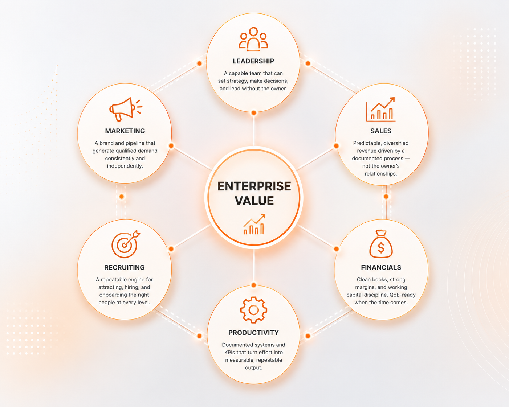

Business Coach & Advisory for Founders Who Want to Exit on Their Own Terms
Most founders have 80% of their net worth locked in a company that can't run without them. We help $2M–$150M business owners build companies that are valuable, transferable, and exit-ready — long before they need to be.

Mike Wolfgang
Founder & Lead Advisor · CEPA Certified
0%
Of business owners are forced to exit — not by choice
0%
Of those owners had no exit plan in place
0%
Of the average owner's net worth is tied up in their business
0×
Gap between top-quartile and median sale multiples
What Home Services Owners Say
Real outcomes from real home services business owners — Professional Services, Construction, Home Services, Manufacturing, Marketing.
A Proven Three-Gate Path from Uncertainty to Readiness
We don't believe in vague advice or one-size-fits-all coaching. Our Discover–Prepare–Decide framework is a structured, gate-based progression that moves you from where you are today to where you need to be — with a clear outcome at every stage.
Discover
We assess the current health, value, and transferability of your business — and your personal readiness as an owner. No guesswork. No assumptions. Just clarity on exactly where you stand.
Key Outcomes
Baseline business valuation · Risk identification · Owner readiness assessment · Gap analysis across leadership, systems, revenue, and customer concentration
"What do I have, what is it worth, and what could prevent me from exiting successfully?"
Prepare
This is where the real work happens. We help you build a company that can run without you — one that's worth more, less risky, and far more attractive to buyers, partners, or successors.
Key Outcomes
Reduced owner dependency · Stronger leadership team · KPI systems and accountability structures installed · Processes documented · Revenue diversified · EBITDA improved
"How do we build a company buyers want to buy — and that owners are proud to run?"
Decide
Once you and your business are prepared, you choose your path from a position of strength — not pressure, burnout, or crisis. Sell, recapitalize, transfer to family, pursue an ESOP, or keep growing. The decision is yours.
Key Outcomes
Proactive transition strategy · Tax and timing considerations · Legacy and buyer fit alignment · Deal structure clarity · Confidence in your next chapter
"Now that I'm prepared, what is the best path forward for my future, my family, and my business?"
Business Coaching Services Built Around Where You're Stuck
Every engagement starts inside the Three-Gate framework, but the day-to-day work takes a few different forms depending on what your business needs most:
Executive Coaching
One-on-one work to sharpen your leadership, decision-making, and capacity to lead a company that's outgrowing you.
See Executive CoachingBusiness Growth Consulting
Building the systems, sales pipeline, and operational structure that drive scalable, founder-independent growth.
See Business Growth ConsultingExit Planning Advisory
Proactive strategy for a transition on your terms — sale, recapitalization, succession, or ESOP.
See Exit Planning AdvisoryBusiness Valuation
A clear, defensible read on what your company is worth today, and what's holding the number back.
See Business ValuationSuccession Planning
Preparing the next layer of leadership — family, internal, or outside — to carry the business forward.
See Succession PlanningOperational Scaling Consulting
Documented processes and accountability structures that let the business run without you in the room.
See Operational Scaling ConsultingBuilt for Founders in the Messy Middle
This work is designed specifically for founder-led companies — owners who built something real through grit, not systems, and are finally ready to build intentionally.
$2M – $150M in Revenue
Professional services, construction and trades, light manufacturing, specialty B2B.
10 – 75 Employees
Founder-led. Owner still active day-to-day. The business runs through you, not around you.
5+ Years in Business
Built by grit, not systems. Financially successful on paper. Time-poor in reality. Knows they're the bottleneck — even if they don't say it out loud.
Thinking Ahead
Not selling tomorrow. But smart enough to know that preparation should start now — not the week you need to exit.
Most Business Owners Exit on Someone Else's Terms.
Death. Divorce. Disability. Disagreement. Disruption.
Half of all business owners are forced out by one of the 5 Ds — not by choice, not on their timeline, and not on their terms. And when it happens, most have nothing in place to protect what they've spent years building.
Exit planning isn't about selling. It's about making sure that when the moment comes — planned or not — you're in control of what happens to your business, your family, and your financial future.
"With most of your net worth tied up in your business, protecting it isn't optional. It's the most important financial decision you'll ever make."
50%
of business owners are forced to exit — not by choice
80%
of those owners had no exit plan in place
80%
of the average owner's net worth is tied up in their business
10×
gap between top-quartile and median sale multiples
Six Drivers of Transferable Value
Top-quartile businesses command 10 times the sale multiple of median businesses. The difference isn't luck — it's the deliberate development of six key value drivers, and it's what our consulting and coaching engagements are built around.
Financials
Clean books, strong margins, and working capital discipline. QoE-ready when the time comes.
Sales
Predictable, diversified revenue driven by a documented process — not the owner's relationships.
Marketing
A brand and pipeline that generate qualified demand consistently and independently.
Leadership
A capable team that can run the business — set strategy, hire, and decide — without the owner.
Recruiting
A repeatable engine for attracting, hiring, and onboarding the right people at every level.
Productivity
Documented systems and KPIs that turn effort into measurable, repeatable output.

What Home Services Business Coaching Looks Like by Trade
Every home services trade has its own operational dynamics, valuation characteristics, and growth challenges. Here is an honest look at what business coaching addresses in the trades we work with most.
Professional Services Business Coaching
Professional services firms — law practices, accounting firms, consulting groups, financial advisory — are built almost entirely on expertise, reputation, and relationships. That's what makes them valuable. It's also what makes them difficult to exit.
Most professional services firms are deeply tied to the founder's personal credibility and client relationships. When the founder leaves, so does the revenue — unless deliberate work has been done to institutionalize those relationships, build a second tier of leadership that clients trust, and create service delivery that doesn't depend on the principal's daily involvement.
Business coaching for professional services founders focuses on transitioning client relationships from personal to institutional, building the associate and partner layers that create real transferable value, and designing the ownership and compensation structures that retain top performers through a transition.
What's at Risk
Most professional services firms don't sell — they dissolve. When the founder retires or steps away without a plan in place, clients follow them out the door, key associates leave for competitors, and the business that took decades to build ends without a transaction. Exit planning is what changes that outcome.
Construction Business Coaching
Construction businesses have some of the strongest fundamentals of any industry — real revenue, clear margins, tangible deliverables — and some of the most persistent owner dependency problems. Most construction firms are built around the owner's relationships with GCs, subs, and key clients, their personal involvement in estimating and project management, and their reputation in the local market.
The result is a business that is difficult to run without the owner present and nearly impossible to sell at a premium. Business coaching for construction founders focuses on building a project management layer that can run jobs end to end, developing a reliable estimating process that doesn't live in the owner's head, and creating the operational systems that allow the business to take on more work without the owner becoming the bottleneck on every project.
What's at Risk
Construction businesses are among the hardest to sell without preparation. Buyers won't pay for a company that stops functioning when the owner walks out. Without a capable ops layer and documented systems, most construction firms either sell far below their potential — or don't sell at all.
Home Services Business Coaching
Home services businesses — HVAC, plumbing, electrical, landscaping, pest control, and general contracting — are among the most attractive in the trades sector to outside buyers. Recurring service demand, essential work customers can't defer, and strong margins when the operation is well-run all make these businesses genuinely compelling.
The challenge is that most home services businesses are deeply owner-dependent at the technician level, the customer relationship level, and the estimating level. Business coaching for home services operators focuses on building a service manager layer that can run daily operations, converting one-time customers into maintenance agreement customers, and documenting the estimating and quoting process so it doesn't live entirely in the owner's head.
What's at Risk
Home services businesses have real buyer demand — but most owners never see it. Without recurring revenue and operational independence, what looks like a great business to the owner looks like a job to a buyer. The difference between a premium exit and no exit at all is usually years of deliberate preparation.
Manufacturing Business Coaching
Manufacturing businesses that have reached the $2M–$150M range have usually proven the product, the process, and the market. What they often haven't built is the organizational infrastructure — the management team, the documented systems, and the financial controls — that would allow the business to be acquired, scaled, or transitioned without the owner at the center.
Business coaching for manufacturing founders focuses on reducing owner dependency in operations and customer relationships, building the quality control and process documentation that holds up under buyer due diligence, and developing the leadership team that can run the floor and manage key accounts when the founder steps back.
What's at Risk
Manufacturing businesses that haven't built operational independence rarely survive a founder's exit intact. Key employees leave. Customers get nervous. Quality slips. Buyers who would have paid a strong multiple walk away from the due diligence process — because the business only runs because one person makes it run.
Marketing Agency Business Coaching
Marketing agency owners are among the most commercially sophisticated founders we work with. They understand positioning, value proposition, and customer acquisition. They spend their days helping clients build brands and generate revenue — and they're typically very good at it.
The irony is that most marketing agencies are among the most difficult businesses to exit successfully. Clients are often loyal to the founder personally. Revenue can be volatile. And the fast-moving culture of most agencies makes documentation and operational infrastructure feel like they don't belong. Business coaching for marketing agency founders helps you bring the same strategic clarity to your own business that you bring to your clients'.
What's at Risk
Most agency founders discover too late that what they built isn't sellable — it's personal. When the business is built around the founder's relationships and reputation, it doesn't transfer. Clients don't stay, team members don't stay, and the revenue that looked like an asset turns out to have been renting — not owned.

"I've Rebuilt Twice. That's Why I Do This Work."
Before turning to consulting and coaching full-time, Mike Wolfgang flew President Clinton around the world as a Marine One crew chief, led two successful business turnarounds, and spent four years as a certified EOS Implementer helping owners build companies that run themselves.
Then life intervened — twice. Mike rebuilt his business during Covid. Then again while caring for his father and battling cancer. Those experiences didn't just change his perspective. They clarified his purpose: help business owners prepare for the external forces they can't predict, before those forces make the decision for them.
Grew from $75M to $1B international merger. Owner is now coaching other agency owners
The Best Time to Start Is Before You Need To.
Whether you're three years from a potential exit or ten, the work you do now determines what your options look like later. Let's find out where your business stands today — free, in 15 minutes.